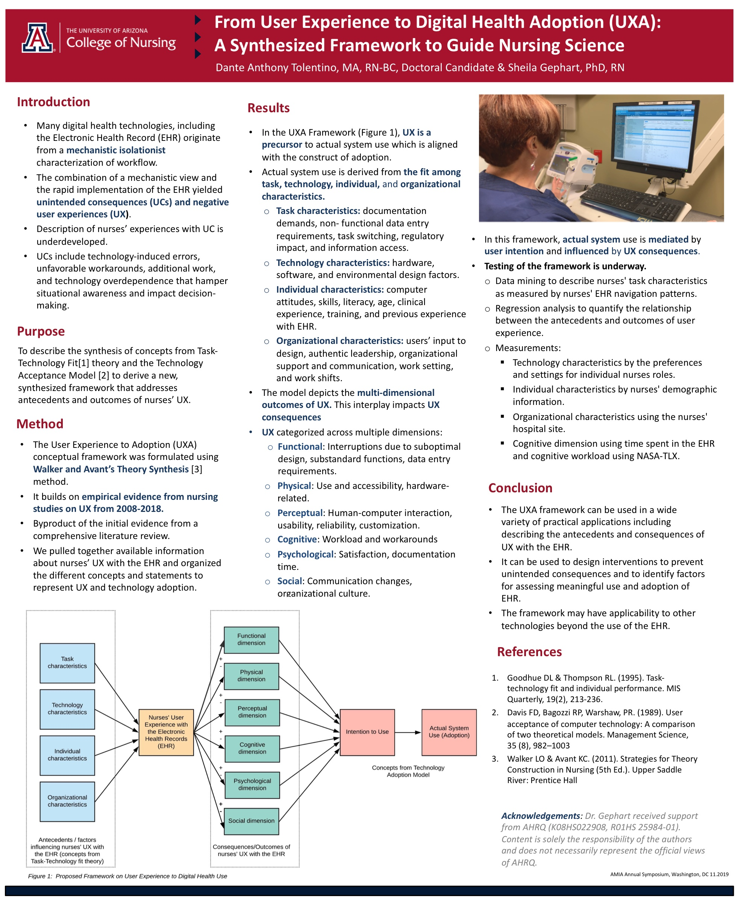

Poster · AMIA Annual Symposium · 2019
How nurses experience digital tools like the electronic health record shapes whether those tools actually get used; this poster offers a framework to understand that link.
Hospitals invest heavily in digital tools like the electronic health record, but those tools only help if the people using them, especially nurses, have a good experience. This poster lays out a framework that connects nurses’ experience (across functional, physical, cognitive, psychological, and social dimensions) to whether a system is truly adopted and used. It argues that designing around real workflows, rather than a narrow mechanical view, leads to safer, more usable systems.
The poster presents a conceptual framework that builds on the fit among task, technology, individual, and organizational characteristics, describing the many dimensions of user experience that influence whether a system is adopted.
It situates the rapid rollout of electronic health records and their unintended consequences within this framework, making the case for human-centered design.
A good user experience is a precursor to a system actually being adopted.
User experience spans functional, physical, cognitive, psychological, and social aspects.
Designing around real workflows leads to safer, more usable tools.
